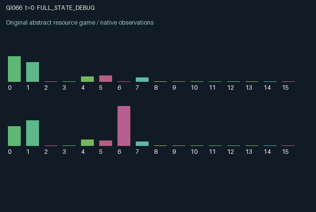

GI066 / LEGACY_ARRAY
astra-d2-00066: delayed directional transport with reversal stress
2 agents5 actions16 observation columns32 original horizonRuntime: PASS
Release verification episode
Untrained uniform legal actions. Actual JAX state sampled along the full original episode; full-state debug camera. No human performance or learning claim.

Run this game
crucibles play --game 66
Start Python locally, then open the address printed by the terminal. Installation, multiplayer, takeover and keyboard controls →
Objective, rewards & ending
Exact task contract
{
"termination": "Original kernel t >= 32; see mechanism and source"
}Declared per-step reward bounds: -1.0 to 1.0. Observability: source_defined.
Rules
Original mechanism document (historical status wording retained)
# astra-d2-00066: delayed directional transport with reversal stress This parentless source proposes two reservoirs joined by a one-directional, failure-prone transport link. Both agents can reverse the common gate; an odd number of simultaneous reversal requests reverses it, while two requests cancel directionally but still add mechanical stress. Directed transfer is pressure-driven, reaches the other reservoir one step later, and can be lost on a burst. This is intentionally related to generic resource routing, simultaneous toggle coordination, congestion and preventive-maintenance mechanisms. It is not presented as a physically calibrated hydraulic model or as a proven new equivalence class. Actions are 0 coast, 1 pump, 2 collect through one's turbine, 3 request reversal, and 4 reinforce. All are legal in every state. Each step first delivers old packets and adds new pumping, caps storage while recording overflow, and computes local turbine draw. Draw depends on stored pressure and old heat. The old gate then determines the sole possible donor. Transfer requires a positive donor-to-recipient pressure difference and an available link. Reversal requests change the next gate only. Thus a partner can benefit from current pumping through later delivery, and either agent can change who supplies the future flow. Stress retains 86% of its prior level, increases with every reversal request and with pressure opposing the gate, and decreases with reinforcement. A load above 0.85 while the link is available causes a burst: the newly dispatched packet is discarded, both agents incur a utility loss, stress drops to 0.15, and three subsequent steps block dispatch. Previously dispatched packets have already arrived and are not retroactively destroyed. Reinforcement can lower stress and cool the reinforcing agent's turbine. Collection heats the local turbine, coasting cools it, and residual stored fluid has a 1% leak. Initialization is randomized; subsequent transitions are deterministic and the step key is intentionally unused. The persistent links are the shared orientation, shared stress and repair countdown, delayed cross-reservoir packets, and private-location heat. Pumping, reversal and maintenance can alter another agent's later collection opportunity. Immediate collection may reduce pressure available for transfer. Simultaneous reversals can impose costs without changing direction. These incentives allow antagonism or coordination without asserting either will be learned. Both agents observe the physical decision state. Columns 0..15 are own/other pressure, own outgoing/other incoming queued packet divided by 0.16, own/other heat, whether the old gate designates oneself as donor, stress, repair countdown divided by 3, own/other last draw divided by 0.25, own/other last overflow, own/other cumulative draw divided by 8, and elapsed time divided by 32. There are no hidden physical variables beyond future action choices. Counters and summary variables are initialized arrays with fixed shapes. Rewards are tanh of 1.7 times local turbine draw minus pump, reversal and reinforcement charges, a burst loss and an overflow charge. This bounds rewards in [-1,1] while preserving the underlying utility order. The interface is two agents, 16 float32 observations, five legal actions, and both terminal flags at the incremented time of 32, returning the terminal state and observation. This is an authored causal specification only. No generated code was executed, and compilation, bilateral interventions, duplicate review, mechanism eligibility and learning effectiveness remain unassessed.
Commands
0Action 0; see mechanism and source
1Action 1; see mechanism and source
2Action 2; see mechanism and source
3Action 3; see mechanism and source
4Action 4; see mechanism and source
Roles & abilities
agent_0 Original legacy agent; see mechanism and source
agent_1 Original legacy agent; see mechanism and source
Observation permissions
Training receives only the original observation rows. Role cameras use declared visibility; debug cameras are explicitly marked. Local benchmark records log debug exposure and role takeover history.
Exact observation layout
[]
Entity visibility & attributes
[]
Actual verification & provenance
Per-game execution receipt
{
"game": "gi066",
"status": "PASS",
"verification_revision": 2,
"source_sha256": "d5c56ef87379f58381251ed29a45890e6142ca69bc3709cd554757fd3a2b5975",
"seed": 20261101,
"runtime": {
"jax": "0.4.38",
"numpy": "1.26.4",
"devices": [
"TFRT_CPU_0"
]
},
"dimensions": {
"num_agents": 2,
"observation_size": 16,
"num_actions": 5,
"max_steps": 32
},
"checks": {
"eager_reset": {
"status": "PASS",
"seconds": 0.718879222869873
},
"observation_spaces_legal_masks": {
"status": "PASS",
"seconds": 0.13556313514709473
},
"eager_step": {
"status": "PASS",
"seconds": 0.8647055625915527
},
"jit_reset": {
"status": "PASS",
"seconds": 0.37110185623168945
},
"jit_step": {
"status": "PASS",
"seconds": 0.38646459579467773
},
"eager_jit_integer_parity_float_measurement": {
"status": "PASS",
"seconds": 0.0
},
"jit_vmap_reset": {
"status": "PASS",
"seconds": 0.43964385986328125
},
"jit_vmap_step": {
"status": "PASS",
"seconds": 0.42992091178894043
},
"outer_autoreset_api": {
"status": "PASS",
"seconds": 0.7501444816589355
},
"full_original_horizon_episode_and_render": {
"status": "PASS",
"seconds": 2.1223692893981934
}
},
"human_scores": null,
"browser_controls": "PENDING",
"failures": [],
"elapsed_seconds": 6.7165796756744385,
"float_parity_max_abs": 0.0,
"numerical_parity": "EXACT",
"raw_terminal_absorbing": "NOT_PART_OF_ORIGINAL_LEGACY_CONTRACT",
"terminal_outer_reset": "PASS",
"episode_steps": 32,
"scripted_random_returns": [
0.9968146625906229,
0.40545544773340225
],
"terminal": true,
"demo_information": "FULL_STATE_DEBUG",
"demo_frames": 33,
"render_roles_checked": 2
}Chromium control verification
{
"game": "gi066",
"status": "PASS",
"human_scores": null,
"engineering": true,
"checks": [
"catalog_selected_and_real_native_reset",
"dom_queue_and_native_step",
"second_participant_ownership_and_native_joint_step",
"all_roles_individually_controllable_no_role_cap",
"explicit_debug_camera",
"release_to_pure_ai_without_reset"
],
"seconds": 2.875047445297241
}Original identity and file hashes
{
"id": 66,
"key": "gi066",
"title": "astra-d2-00066: delayed directional transport with reversal stress",
"summary": "",
"tags": [],
"family": "legacy_array",
"dimensions": {
"num_agents": 2,
"observation_size": 16,
"num_actions": 5,
"max_steps": 32
},
"source_sha256": "d5c56ef87379f58381251ed29a45890e6142ca69bc3709cd554757fd3a2b5975",
"manifest_sha256": "0989f32ef02af7e12afc1986518a3d769da5e46eadb6742494b84639f44fbed3",
"files": [
{
"file": "candidate.py",
"sha256": "d5c56ef87379f58381251ed29a45890e6142ca69bc3709cd554757fd3a2b5975",
"bytes": 4957,
"origin": "work/exp_2/astra_generation/discovery_v2/initial/candidate_00066/attempt_00/candidate.py"
},
{
"file": "mechanism.md",
"sha256": "7c696991c21bf6b875ab39e10d42e5067a18553850de623f3de7566ee6c7c3bf",
"bytes": 3638,
"origin": "work/exp_2/astra_generation/discovery_v2/initial/candidate_00066/attempt_00/mechanism.md"
}
],
"original_status": "LEGACY_SOURCE",
"original_saved_replay": false,
"release_validation": "PASS",
"human_scores": null,
"browser_validation": "PASS"
}